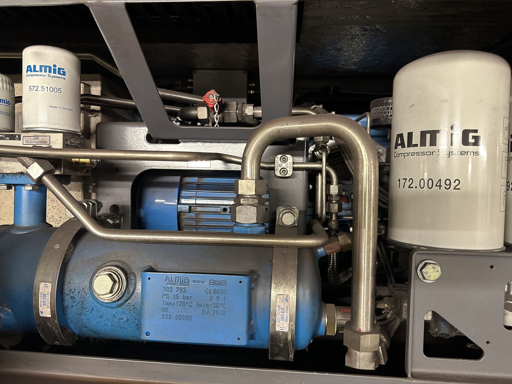

Kompressoreinheit (ALMIG Compressor Systems) mit Elektromotor, Ölfiltern und Drucktank.
Bauteil auf der Seite „Unterbau“
Baut den Systemdruck für Luftfeder und Bremsanlage auf – während der Fahrt ca. 8,6 bar, für die Bremsen werden mindestens 5 bar benötigt.
Ein elektrisch angetriebener Kompressor verdichtet Umgebungsluft und speist sie in das Druckluftsystem des Zuges ein. Ein Druckregler (Regelungstechnik) schaltet den Kompressor bedarfsgerecht zu und ab, um den Systemdruck im Zielband zu halten.
Steigt die Fahrgastzahl stark an (z. B. am Hauptbahnhof), sinkt der Druck durch den Mehrbedarf der Luftfedern; reicht er nicht mehr für die Bremse, muss der Zug bis zu zwei Minuten warten, bis der Kompressor nachgeladen hat.
Hinweis: Das Foto zeigt eine Kompressoreinheit dieser Bauart im Werkstattbereich – ob es sich um die exakt fahrzeugseitig verbaute Einheit oder eine baugleiche stationäre Anlage im Depot handelt, ist auf dem Foto nicht sicher zu unterscheiden.